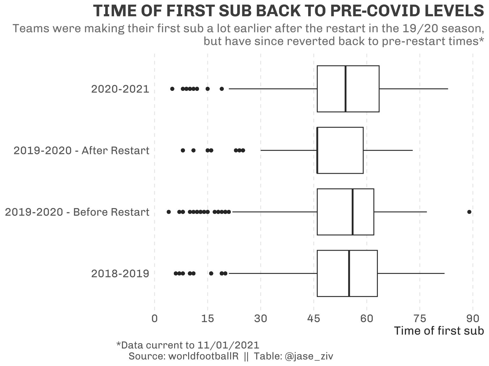

With the creation of the worldfootballR R package (a new R package to aid in the extraction of Football (Soccer) data from fbref), I will be trying to highlight ways the package can be used.
In this piece, I will analyse Liverpool’s use of substitutions in the English Premier League (EPL) over the last three seasons to understand whether there has been a change in behaviour in the currrent season, and whether there was a change around the COVID outbreak and subsequent pause taken during the 2019-2020 season.
Data was extracted for the last two and a half seasons, up to the end of matchweek 17 in the 2020/21 EPL season.
Extract Data Using worldfootballR
The package has a function called get_match_summary which extracts match summary (goals, subs, red/yellow cards) data for a match URLs.
To get the match URLs, another function - get_match_urls - can be used, which accepts a country code (“ENG” for England), gender and the year the season(s) ended, and returns a vector of match URLs.
devtools::install_github("JaseZiv/worldfootballR")
library(worldfootballR)
match_urls <- fb_match_urls(country = "ENG", gender = "M", season_end_year = c(2019:2021))
match_summaries <- fb_match_summary(match_url = match_urls)Teams making their first sub
Now that the package instructions are out of the way, we turn our attention to the analysis of substitution data in the Premier League, and specifically ask the question, has there been a change in Liverpool’s substitution behaviour.
The analysis was loosely inspired by a piece done by FiveThirtyEight on Bundesliga team susbstitutions before and after the league restart.
All Teams
When the COVID-19 pandemic swept across the nation, some of the major leagues were forced to pause their seasons while cases became manageable.
During the 2019-20 season before the virus halted play, teams were typically making their first sub at the 56th minute, which was consistent with that of the 2018-19 season, however once play resumed (and teams were allowed to make more subs), that number dropped to 46 minutes (half-time typically).
This current season has seen the teams’ behaviour revert back to the pre-restarted season numbers (54 minutes).

What about Liverpool; where do they sit?
In all seasons analysed, Liverpool make slightly more subs in a season compared to the league average, with the average number of subs in a season peaking after the restart last season to 4.67 subs per game. The current season has seen this revert to pre-COVID levels.
Interestingly, while Liverpool’s first sub typically comes slightly later than the league average (56 minutes compared to 52 minutes), the Reds have stuck close to their first sub time after the season restart, while the league average has reverted back to pre-COVID levels, reversing the league-wide trend.
And the first hour?
The Reds made 12% of their substitutions in the first hour during the combined 2019-20 season (double that of their 2018-19 season), and this season has seen this percentage again double through the first 16 games. The league however has experienced a direct reversal of this trend, spiking to 24% during the restarted part of the 19/20 season, and settling back down at the league average for the previous seasons.
It will be interesting to see how this trend continues throughout the latter parts of this season.
| LIVERPOOL SUBBING MORE IN THE FIRST 60 MINUTES | ||||||||
| The rate that Liverpool are subbing in the first 60 minutes has doubled from last season, with 1 in 4 subs coming in this time period - double last season's rate | ||||||||
| Number of Subs | Avg Time to 1st Sub | Subs/Game | Share Subs in 1st 60 | |||||
|---|---|---|---|---|---|---|---|---|
| Liverpool | Rest of League | Liverpool1 | Rest of League1 | Liverpool | Rest of League | Liverpool1 | Rest of League1 | |
| 2018-2019 | 112 | 108 | 64 | 51 | 2.95 | 2.85 | 6% | 18% |
| 2019-2020 - Before Restart2 | 87 | 79 | 64 | 50 | 3.00 | 2.77 | 12% | 18% |
| 2019-2020 - After Restart2 | 42 | 35 | 57 | 49 | 4.67 | 3.77 | 12% | 24% |
| 2020-2021 | 47 | 45 | 56 | 52 | 2.94 | 2.74 | 24% | 18% |
| SOURCE: worldfootballR TABLE: @jase_ziv |
||||||||
| 1 All clubs excluding Liverpool | ||||||||
| 2 COVID-interrupted Season | ||||||||
Wrap Up
This was the first in a series of analyses that will make use of various data extraction functions in the worldfootballR package.
Here we saw that Liverpool are making their first substitution earlier than their previous trends, and are deviating from the league averages. I will follow this analysis to see if this trend has continued.
As always, any questions/comments about the piece or the R package, feel free to reach out through the regular channels.
GO REDS!!